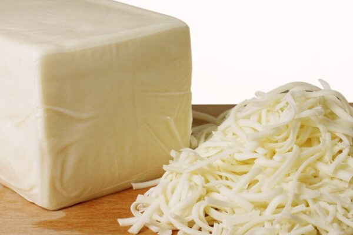

Me gusta el queso

Estos son los tipos de queso:
- Cottage
- Azul
- Mozzarella
A continuación muestro los pasos para crear queso cottage:
- Templar ligeramente la leche (30ºC).
- Vaciar la capsula en medio vaso de la leche templada. Remover bien hasta su completa disolución.
- Mezclar con el resto de la leche. Tapar para conservar el calor.
- Poner calcio y cuajo.
- Reposar 24 horas en un sitio abrigado y tapado.
- Cortar la cuajada en cuadrados de 2 cm.
- Calentar la cuajada a 38ºC lentamente, mantenerla 10 minutos.
- Subir la temperatura a 45ºC y mantenerla 10 minutos o hasta que la cuajad esté con consistencia firme.
- Forrar un colador con la tela y dejar desuerando.
- Cuando tenga una consistencia firme desmenuzar con la mano y salar ligeramente.
- Guardar en la nevera .Secar el suero que vaya soltando el queso, para favorecer su conservación.
¿Por qué es genial el queso?
- Queso cottage:
- -Es muy suave
- -Viene en la ensalada de pardos
- Queso mozzarella:
- -Es rico
- -Viene en la pizza
- -La pizza tambien es rica

Preferencias:
Sexo:
Cheddar
Cottage
Edam
Cottage
Edam
Masculino
Femenino
PUCP
Femenino
PUCP
Copyright marcelo_el_papi ULima 2017